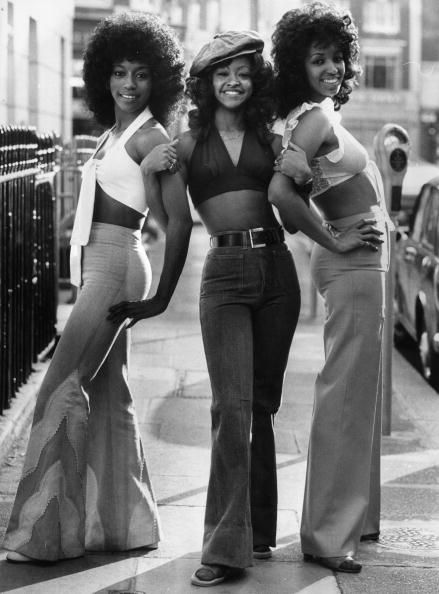
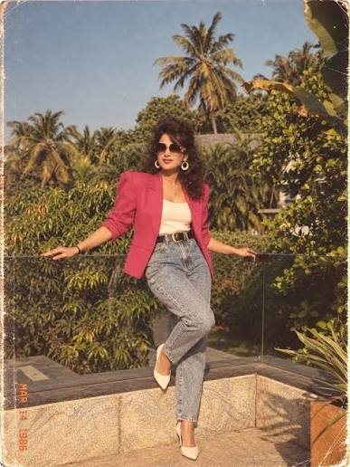

80s fashion can be separated into two categories. The first category is characterized by soft pastels, and the second by bold, bright makeup and geometric clothing. Pastels were seen more commonly in everyday wear, while bold colors and large silhouttes were seen mainly in media and within popculture as a whole. It was a period of experimentation in the fashion world, so really nothing was considered too much. race-striupes were common when it came to makeup, and layering was really honed in on when it came to jewelry. Common characteristics of all 80s fashion would be shoulder pads, light-washed and acid wash denim, and teased hair.
The 70s were characterized with earthy tones and flowy fabrics. When colors were introduced into garmets, they leaned on the warm side with oranges and burgandy. They also featured bold prints and patterns, such as paisley and floral. Common characteristics of 70s fashion would be jewel and earth tones, courderoy and similar fabrics, and flared silhoutees. By flared silhoutetes, I am referring not only to bell bottom jeans, which get larger towards the ends, but also to how the outfits were structured, with sleeves being loose, the midrift to waist area being tightened, and the legs moving outwards, creating a largge and dynamic silhoutte at points. As it pertains to hair, the hair was not neccessarily teased, but was textured and full of volume.

